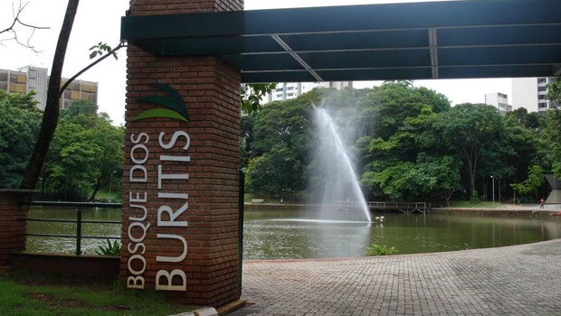
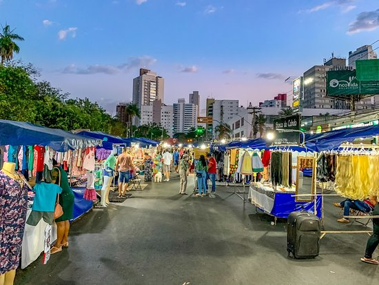

Pontos Turísticos em Goiânia
Goiânia, a capital de Goiás, oferece uma variedade de atrações turísticas. Confira alguns dos principais pontos turísticos da cidade:
Praça Cívica

A Praça Cívica é o coração político e histórico de Goiânia. Ela abriga o Palácio das Esmeraldas e o Monumento às Três Raças, representando a miscigenação do povo brasileiro.
Bosque dos Buritis
O Bosque dos Buritis é um oásis verde no centro da cidade. É um local perfeito para um passeio relaxante, com lagos, trilhas e muita natureza.
Feira da Lua
A Feira da Lua é um mercado ao ar livre que acontece aos sábados. Você encontrará artesanato, comidas típicas e muito mais.